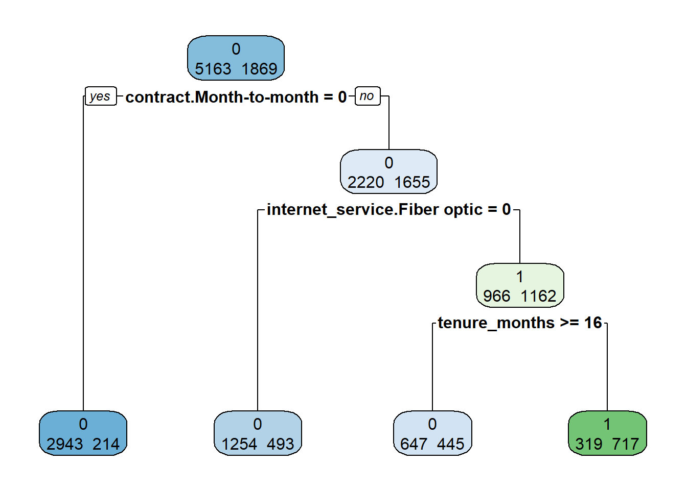
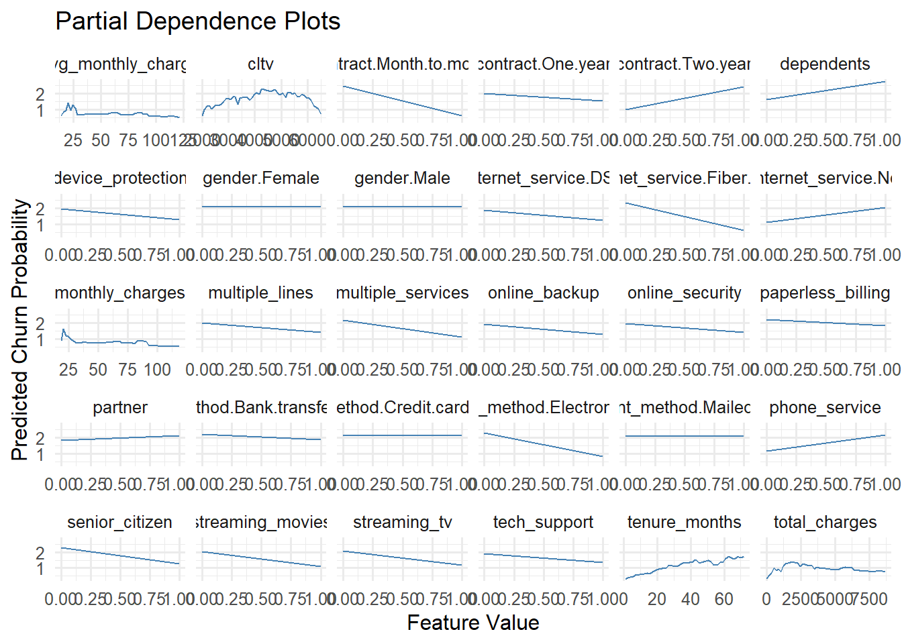
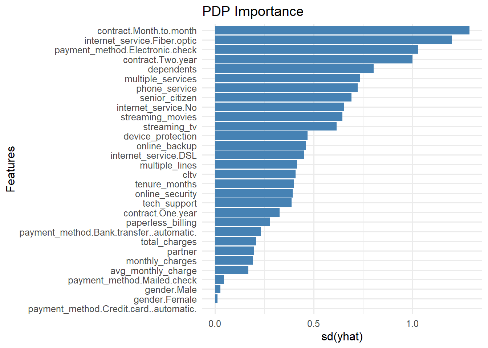

Code
library(tidyverse)
library(readr)
library(rpart)
library(rpart.plot)
library(pdp)
library(randomForest)
library(vip)
library(reshape2)library(tidyverse)
library(readr)
library(rpart)
library(rpart.plot)
library(pdp)
library(randomForest)
library(vip)
library(reshape2)df = read_csv("cleaned_telco_data.csv")tree_model = rpart(churn_value ~ ., data = df, method = "class", cp = 0.01)
rpart.plot(tree_model, extra = 1)
Since this study is would be mainly focused on the variable importance of tree-based model, I start by fitting the dataset by a single decision tree model.
Due to the algorithm, the single decision tree offers a highly interpretable model where feature importance is directly observable from the tree structure. Features used near the top of the tree typically split the data into the largest and most distinct groups, and are thus considered the most important. In this case, we have the top features would be contract.Month-to-month, internet_service.Fiber optic, and tenure_month. Unexpectedly, none of the include the any information about the amount of money charged.
However, single decision tree model is very likely overfitting the training set, especially when we have 30 features in our dataset. There is a big chance that important features are ignored. Since the a little change in the training set can lead to a very different tree structure, the variance importance observed from a single tree model is very unstable.
# Fit a Random Forest model
set.seed(123)
df$churn_value = as.factor(df$churn_value)
colnames(df) = make.names(colnames(df))
rf_model = randomForest(churn_value ~ ., data = df, importance = TRUE)# Get Gini importance from the RF model
gini_df = as.data.frame(importance(rf_model)) |>
rownames_to_column("Feature") |>
arrange(desc(MeanDecreaseGini)) # sort by importance
ggplot(gini_df, aes(x = reorder(Feature, MeanDecreaseGini), y = MeanDecreaseGini)) +
geom_col(fill = "steelblue") +
coord_flip() +
labs(
title = "Variable Importance (Gini Index)",
x = "Feature",
y = "Mean Decrease in Gini"
) +
theme_minimal(base_size = 12)In order to make the result more stable and reliable, I fit the data with a random forest model. Similar to decision tree, random Forests is also an an intrinsically interpretable model. It’s feature importance using the Mean Decrease in Gini Index, which reflects how much each feature contributes to improving node purity across all trees.
This graph presents the Gini-based variable importance from random forest model. Unlike the the single tree model, most of all of top features of random forest are continuous and monetary-derived. This is expected because these features directly reflect the customer’s economic relationship with the business, which is often the strongest signal of satisfaction and risk.
Other than top 5 features that are monetary and continuous, contract.Month-to-month, internet_service.Fiber optic (the top 2 features of single tree model) have highest mean decrease in Gini.
train_x = df[, setdiff(names(df), "churn_value")]
var = colnames(train_x)
pdp_df = map(var, function(x)partial(rf_model,pred.var = x))|>
map_dfr(pivot_longer, cols =1)
pdp_importance <- pdp_df %>%
group_by(name) %>%
summarise(pdp_sd = sd(yhat), .groups = "drop")
pdp_df <- pdp_df %>%
left_join(pdp_importance, by = "name") %>%
arrange(desc(pdp_sd))# Step 5: Plot
ggplot(pdp_df, aes(x = value, y = yhat)) +
geom_line(color = "steelblue") +
facet_wrap(~ name, scales = "free_x") +
labs(
title = "Partial Dependence Plots",
x = "Feature Value",
y = "Predicted Churn Probability"
) +
theme_minimal(base_size = 12)
ggplot(pdp_importance, aes(x = reorder(name, pdp_sd), y = pdp_sd)) +
geom_col(fill = "steelblue") +
coord_flip() +
labs(
title = "PDP Importance",
x = "Features",
y = "sd(yhat)"
) +
theme_minimal(base_size = 12)
To better understand the effect of each feature on predicted churn probability, I apply the Partial Dependence Plots to the random forest model. PDP visualize how the predicted outcome changes as a single feature varies, while all others are held constant. To compare the variable importance with PDP method, I visualize each features by their standard deviation of predicted probabilities (yhat).
Similar to the single tree model, the top 2 features are contract.Month-to-month, internet_service.Fiber optic.
But surprisingly, the top 15 features are all binary categorical features. I realized that for categorical variables (especially binary), the PDP can exaggerate importance due to discrete jumps in predictions.
is_binary <- function(x) length(unique(x)) == 2 && all(unique(x) %in% c(0, 1))
continuous_vars <- train_x %>%
select(where(~ !is_binary(.))) %>%
colnames()
con_df = map(continuous_vars, function(x)partial(rf_model,pred.var = x))|>
map_dfr(pivot_longer, cols =1)
con_importance <- con_df %>%
group_by(name) %>%
summarise(pdp_sd = sd(yhat), .groups = "drop")
# Step 4: Join and reorder factor levels
con_df <- con_df %>%
left_join(con_importance, by = "name") %>%
arrange(desc(pdp_sd))# Step 5: Plot
ggplot(con_df, aes(x = value, y = yhat)) +
geom_line(color = "steelblue") +
facet_wrap(~ name, scales = "free_x") +
labs(
title = "Partial Dependence Plots (continuous features)",
x = "Feature Value",
y = "Predicted Churn Probability"
) +
theme_minimal(base_size = 12)
ggplot(con_importance, aes(x = reorder(name, pdp_sd), y = pdp_sd)) +
geom_col(fill = "steelblue") +
coord_flip() +
labs(
title = "PDP Importance (continuous features)",
x = "Features",
y = "sd(yhat)"
) +
theme_minimal(base_size = 12)Then, I conducted a separate PDP analysis for continuous features only to avoid distortion by binary features. I noticed that cltv has higher importance than other monetary features, which is very different from the result of the gini based importance. I was wondering maybe this is because those monetary features are correlated. And PDP’s results might be mislead by multicollinarity.
ct_df0 = df|> select(-c("tenure_months", "monthly_charges", "avg_monthly_charge"))
ct_rf = randomForest(churn_value ~ ., data = ct_df0, importance = TRUE)
ct_var = c("cltv", "total_charges")
ct_df = map(ct_var, function(x)partial(ct_rf, pred.var = x))|>
map_dfr(pivot_longer, cols =1)
ct_importance <- ct_df %>%
group_by(name) %>%
summarise(pdp_sd = sd(yhat), .groups = "drop")
ggplot(ct_df, aes(x = value, y = yhat)) +
geom_line(color = "steelblue") +
facet_wrap(~ name, scales = "free_x") +
labs(
title = "Partial Dependence Plots (cltv & total_charges)",
x = "Feature Value",
y = "Predicted Churn Probability"
) +
theme_minimal(base_size = 12)ggplot(ct_importance, aes(x = reorder(name, pdp_sd), y = pdp_sd)) +
geom_col(fill = "steelblue") +
coord_flip() +
labs(
title = "PDP Importance (cltv & total_charges)",
x = "Features",
y = "sd(yhat)"
) +
theme_minimal(base_size = 12)Therefore, I drop all the correlated monetary features expected total_charges (with the highest Gini-based variable importance), then fit another model and apply PDP with this dataset. Although, the sd(yhat) of total_charges almost doubled but it is still much less than the sd(yhat) of cltv. Maybe other than multicollinearity and binary features, there are something else causing the large difference between PDP and Gini-based importance.
To better handle the binary features, I used permutation-based methods to compute variable importance. Permutation importance are measured by shuffling the values of a feature and see how much does it harm the model’s predictive performance. Since the predicted varible is binary and imbalanced, I decided to use “accuracy” and “roc_auc” as my metric.
train_x = df[, setdiff(names(df), "churn_value")]
# Define prediction wrapper to return predicted class labels
pred_class = function(object, newdata) {
factor(predict(object, newdata = newdata, type = "response"), levels = c(0, 1))
}
# Generate VIP plot using accuracy
vip(rf_model,
method = "permute",
train = train_x,
target = df$churn_value,
metric = "accuracy",
pred_wrapper = pred_class,
nsim = 10,
num_features = ncol(train_x)) The “tenure_months”, “contract.Month.to.month”, “total_charges”, “internet_service.Fiber.optic”, and “monthly_charges” are the top 5 most important predictors of the “accuracy”. These features cause the greatest drop in model accuracy when they are shuffled. Interestingly, the top 5 features this time include both continous and binary features. And the thoes 5 features are in the top 5 feature list of either Gini of PDP.
# Generate VIP plot using roc
vip(rf_model,
method = "permute",
train = train_x,
target = df$churn_value,
metric = "roc_auc",
pred_wrapper = function(object, newdata) {
predict(object, newdata = newdata, type = "prob")[, "1"]
},
nsim = 10,
num_features = ncol(train_x))The x-axis of the “roc_auc” graph is negative. It is counter intuitive because how can the model performace improves after shuffling the values of feature.
According to instruction book of the vip Package, “roc_auc” metric would treat one of outcomes of the predicted as the “event” of interest. And the default event level is always the first class label in alphabetical or numerical order. So set event_level to “second” would flip graph and solve the problem.
# Generate VIP plot using roc
vip(rf_model,
method = "permute",
train = train_x,
target = df$churn_value,
metric = "roc_auc",
event_level = "second",
pred_wrapper = function(object, newdata) {
predict(object, newdata = newdata, type = "prob")[, "1"]
},
nsim = 10,
num_features = ncol(train_x))The features like “tenure_month” and “total_charges” still have very high importance under “roc_auc” metric. But the importance of key binary features in other methods (“contract.Month.to.month”, “internet_service.Fiber.optic”) decrease. This difference is because accuracy metric measures how frequently the predictions are correct, so features that improve threshold-based classification would be considered as more important. However, “roc_auc” measures how the model ranks the churners higher than the non-churners, so features that improve overall risk differentiation would be considered as more important, even if they do not impact binary decisions directly.
# ---- Gini Importance ----
gini_df = as.data.frame(importance(rf_model)) |>
rownames_to_column("Feature") |>
select(Feature, Gini = MeanDecreaseGini)
# ---- ROC AUC Permutation ----
roc_vi = vi(
rf_model,
method = "permute",
train = train_x,
target = df$churn_value,
metric = "roc_auc",
event_level = "second",
pred_wrapper = function(object, newdata) {
predict(object, newdata = newdata, type = "prob")[, "1"]
},
nsim = 10
) |> select(Feature = Variable, ROC_AUC = Importance)
# ---- Accuracy Permutation ----
pred_class = function(object, newdata) {
factor(predict(object, newdata, type = "response"), levels = c(0, 1))
}
acc_vi = vi(
rf_model,
method = "permute",
train = train_x,
target = df$churn_value,
metric = "accuracy",
pred_wrapper = pred_class,
nsim = 10
) |> select(Feature = Variable, Accuracy = Importance)
# ---- Merge All ----
vi_comparison = reduce(list(gini_df, roc_vi, acc_vi), full_join, by = "Feature") |>
arrange(desc(Gini))
# ---- Plot ----
vi_long = vi_comparison |>
pivot_longer(cols = -Feature, names_to = "Metric", values_to = "Importance")
ggplot(vi_long, aes(x = reorder(Feature, Importance), y = Importance)) +
geom_col(fill = "steelblue") +
coord_flip() +
facet_wrap(~ Metric, scales = "free_x") +
labs(
title = "Feature Importance by Metric",
x = "Feature",
y = "Importance"
) +
theme_minimal(base_size = 12)vi_normalized <- vi_comparison |>
mutate(across(-Feature, ~ (. - min(.)) / (max(.) - min(.)), .names = "{.col}_norm"))
# ---- Compute Correlation Matrix on Normalized Scores ----
vi_corr_normalized <- vi_normalized |>
select(ends_with("_norm")) |>
setNames(c("Gini", "ROC_AUC", "Accuracy")) |> # Optional: clean up column names
cor(use = "complete.obs")
# ---- Convert to Long Format for Plotting ----
vi_corr_long_norm <- reshape2::melt(vi_corr_normalized)
# ---- Plot Normalized Heatmap ----
ggplot(vi_corr_long_norm, aes(x = Var1, y = Var2, fill = value)) +
geom_tile(color = "white") +
geom_text(aes(label = round(value, 2)), color = "black", size = 5) +
scale_fill_gradient2(low = "steelblue", high = "darkred", mid = "white",
midpoint = 0.5, limit = c(0, 1), space = "Lab",
name = "Correlation") +
theme_minimal(base_size = 14) +
labs(title = "Correlation Heatmap of Feature Importance Methods",
x = "", y = "") +
theme(axis.text.x = element_text(angle = 45, vjust = 1, hjust = 1))Finally, I visualized Gini, ROC AUC permutation, and Accuracy permutation importance all together in a faceted bar and correlation heatmap. The shape of the faceted graphs look very similar and all the values in the heatmap are greater than 0.86. This suggest that the most and less important features determined by all three methods are very much overlapped.
Features like “tenure_months”, “total_charges”, and “contract.Month.to.month” likely dominate in all metrics.In contrast, features such as “phone_service”, “multiple_services”, “payment_method.Mailed.check”, and “payment_method.Bank.transfer.automatic” consistently appear at the bottom across all metrics.
Interestingly, total_charges and tenure_months have higher importance than average_monthly_charge and monthly_charges across all three methods. This is a clear sign that long-term customers tend to have different churn behaviors than newer ones. Customers who have stayed longer or spent more over time may likely exhibit distinct patterns of loyalty or dissatisfaction.
Similarly, “contract.Month.to.month” ranks high in both Gini and Accuracy, underscoring its role in classification thresholds. It indicates that short-term contracts might make customers more flexible and prone to churn. However, it ranks slightly lower in ROC AUC, possibly because it contributes less to improve overall risk differentiation.